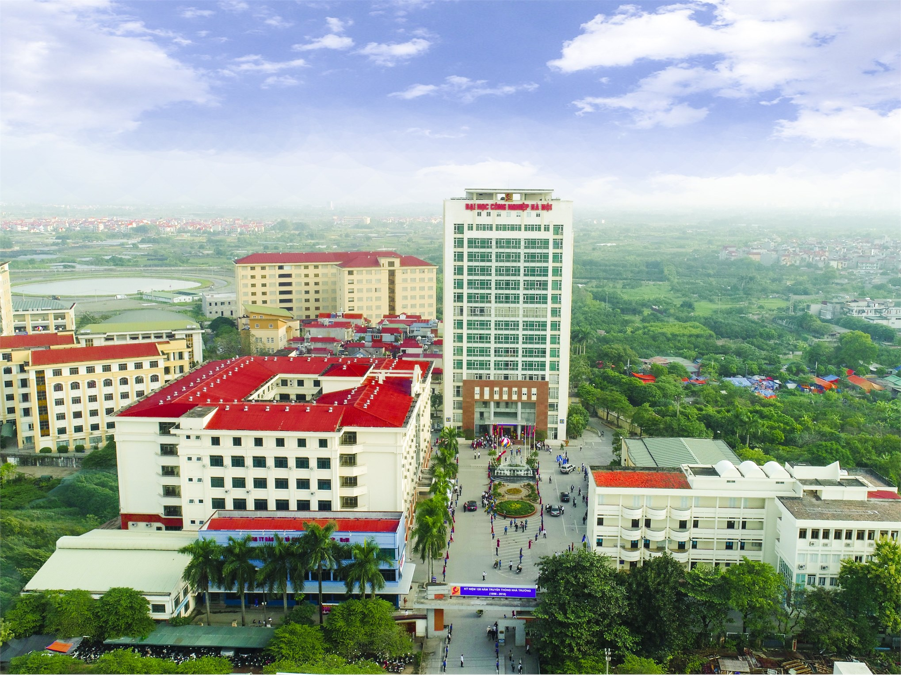
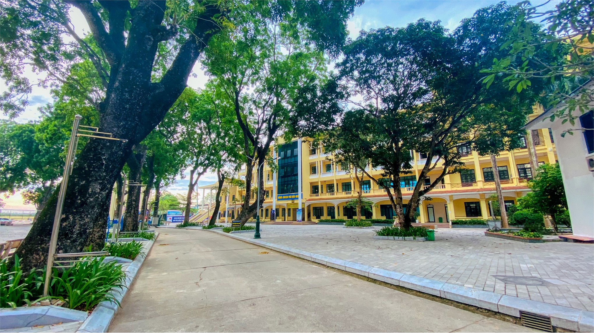
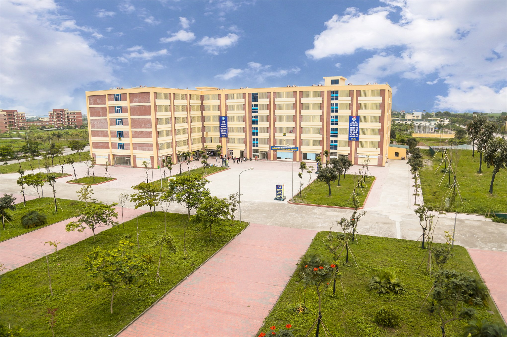
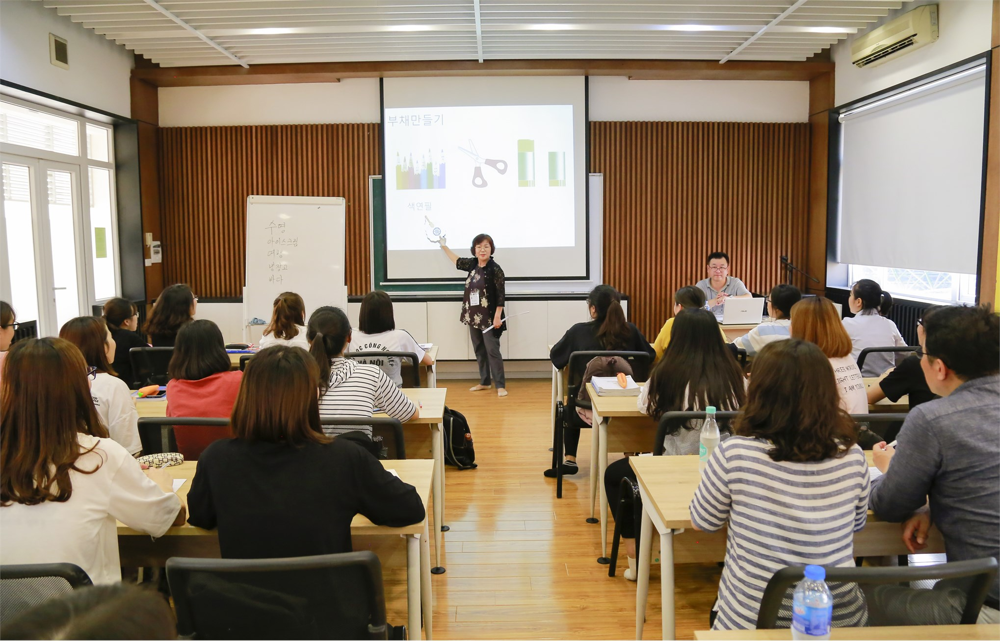
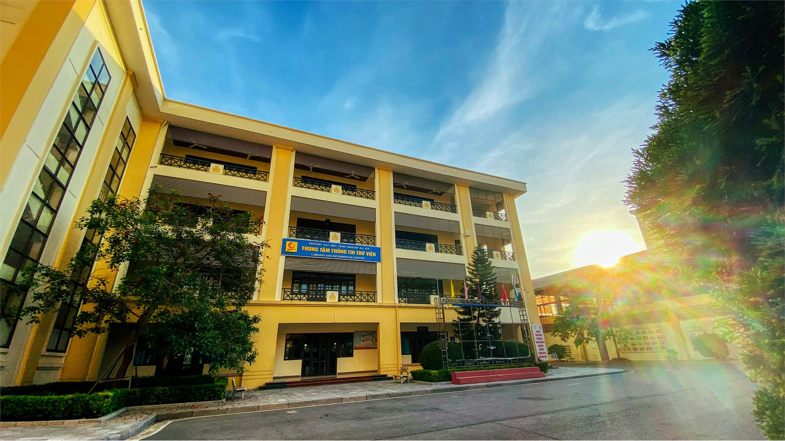
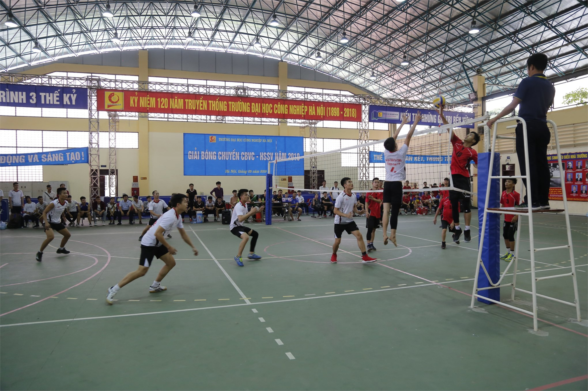
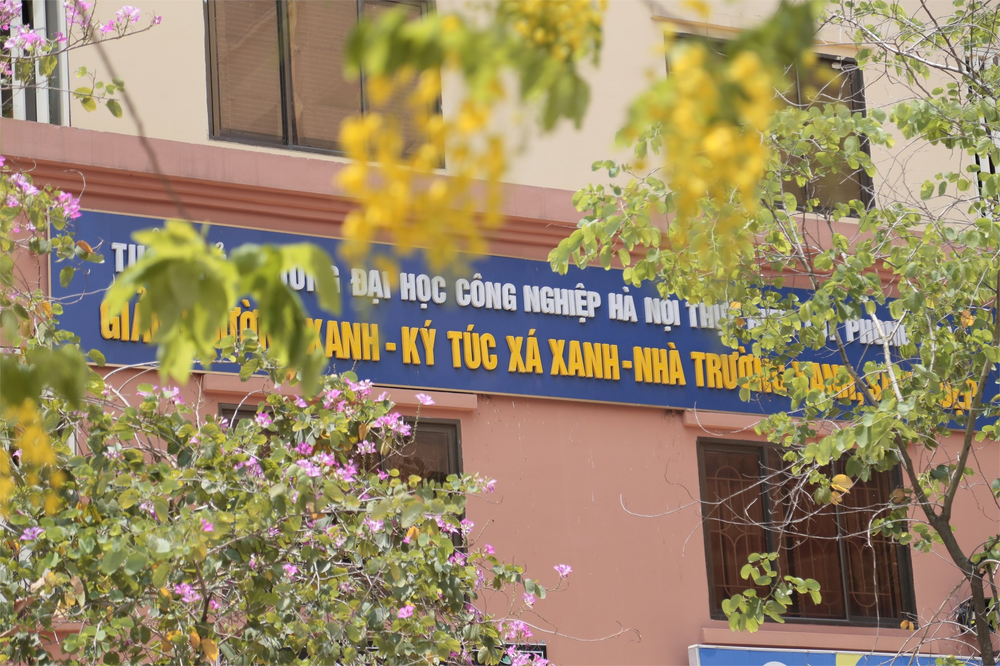

Giới thiệu
Cơ sở vật chất
Đại học Công nghiệp Hà Nội xây dựng một môi trường giáo dục mở để tạo bình đẳng, cơ hội học tập, trải nghiệm và khơi dậy tài năng cho tất cả mọi người.
Một ngôi trường hiện đại với 3 cơ sở đào tạo, có tổng diện tích gần 50 ha
Cơ sở 1 tại phường Minh Khai, quận Bắc Từ Liêm, thành phố Hà Nội.
Cơ sở 2 được đặt tại phường Tây Tựu, quận Bắc Từ Liêm, thành phố Hà Nội.
Cơ sở 3 ở phường Lê Hồng Phong, thành phố Phủ Lý, tỉnh Hà Nam.
ĐHCNHN rộng rãi khang trang với hơn 300 giảng đường, phòng học lý thuyết, hội trường lớn, phòng hội thảo, 200 xưởng thực hành và phòng thí nghiệm được đầu tư thiết bị hiện đại đồng bộ đảm bảo chất lượng đào tạo và thực hành. Quần thể thể thao của trường khép kín, đa chức năng gồm sân tập, nhà thi đấu, sân tennis, cầu lông, bóng bàn… được trang bị đầy đủ tiện nghi, phục vụ cho cán bộ, giảng viên rèn luyện thể thao sau giờ học tập, lên lớp.
Hệ thống phòng học hiện đại, tạo không gian mở cho mỗi giờ học của sinh viên thêm sáng tạo
Thư viện số được thiết kế thông minh, giúp cho sinh viên có thể tra cứu thông tin mọi lúc, mọi nơi. Với gần 400.000 đầu sách trong nước và quốc tế, với nhiều loại phòng đọc có nhiều công năng khác nhau, giúp sinh viên có thể học nhóm, trao đổi học thuật hoặc tìm kiếm thông tin và tư liệu 1 cách sâu rộng.
Thư viện Đại học Công nghiệp Hà Nội khang trang, tiện nghi và trang bị hàng nghìn đầu sách, tài liệu phục vụ công tác nghiên cứu, học tập của cán bộ, giảng viên, sinh viên nhà trường
Khu thể thao là điểm nhấn nổi bật bởi nhiều tiện ích. Nhà đa năng rộng hơn 2.000 m2 là một không gian thực sự thu hút sinh viên mỗi giờ học thể chất, sinh hoạt tập thể. Bóng chuyền, cầu lông, bóng bàn, đá cầu hay bóng rổ… rất nhiều môn thể thao diễn ra tấy sôi nổi tại nơi đây. Những giải đấu mở rộng với sự tham gia của nhiều trường đại học trên địa bàn thành phố thường xuyên được tổ chức tại nhà đa năng của trường, mở ra cho sinh viên rất nhiều cơ hội giao lưu, học hỏi với các trường bạn. Sân tenis rộng lớn, hiện đại cũng là nơi phục vụ cán bộ, giảng viên và sinh viên rèn luyện thể thao, nâng cao sức khỏe sau những giờ học tập, lên lớp căng thẳng.
Nhà đa năng rộng hơn 2000 m2 là nơi diễn ra những giải đấu bóng chuyền, cầu lông, bóng rổ ...cho cán bộ, giảng viên, sinh viên trong và ngoài trường
Với những sinh viên xa nhà, ký túc xá thực sự ấm áp, thân thuộc như ngôi nhà thứ 2. Hệ thống các tòa nhà 9 tầng khang trang, sạch đẹp với hơn 800 phòng ở khép kín, đầy đủ bình nóng lạnh, điều hòa, khu vệ sinh riêng biệt. Dịch vụ tiện ích hiện đại như sân chơi bóng rổ, nhà ăn, khu giặt là, siêu thị, quán cafe...bao quanh tạo nên một thiên đường thu nhỏ mà bất kỳ sinh viên ở nội trú nào cũng cảm thấy rất hài lòng và thấy may mắn khi được ở trong KTX nhà trường.
Ký túc xá 9 tầng khang trang, tiện nghi rợp bóng cây xanh mát
Trạm Y tế được đầu tư thiết bị hiện đại, từ hệ thống giường bệnh, Máy thở phòng chống covid, máy siêu âm, máy xét nghiệm tổng quát, máy xét nghiệm sinh hóa, máy xét nghiệm huyết học, máy đo mật độ loãng sương, máy điện tim...; với đội ngũ y bác sĩ tâm huyết đảm bảo đáp ứng yêu cầu khám bệnh ban đầu cho giảng viên, sinh viên nhà trường.